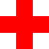

| Web Development Intern at NetCuro | ||
|---|---|---|
| Worked over the summer and fall of 2016 as a web developer for NetCuro. Responsible for partially developing both the front-end and back-end, utilizing many technologies. | more less |
|
| ePortfolio Website (Personal Project) | ||
|---|---|---|
| Developed with HTML, JavaScript and CSS throughout the summer and fall of 2016. Created to provide a medium for recruiters to learn more about my experience and skills. | more less |
|
| Healthcare Management (Academic Project) | ||
|---|---|---|
|  | Led a group of 3 students to develop a website for a fictitious hospital to be used by healthcare staff and patients as an academic project, employing a variety of technologies. | more less |
| Holo-Desk with the SSE | ||
|---|---|---|
| Collaborated with the Society of Software Engineers to create an interactive tabletop system. Used technologies such as the Raspberry Pi, Arduino Mega and Microsoft Kinect. | more less |
|
| Professional Bukkit Plugin Developer | ||
|---|---|---|
| Hired by clients between May 2014 and April 2016 to develop Bukkit plugins in Java. Responsible for the design, implementation, testing and maintenance of each plugin. | more less |
|
| High School Coding Projects | |||
|---|---|---|---|
| An assortment of mini-projects completed outside of class during high school. Programmed mostly in Java and C++ in an effort to improve my programming ability and understanding of the languages. | |||
| Part-Time Jobs | |||
|---|---|---|---|
| Currently working as a student notetaker for RIT’s Department of Access Services since August 2015. Worked as a team member at Chick-fil-A throughout high school for a little less than 2 years. | |||